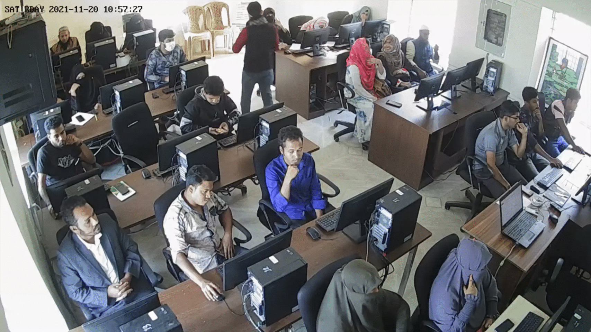
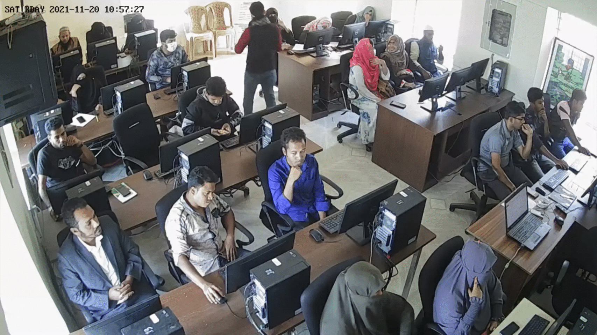

এ এস এম সাদ নাটোর থেকে ফিরে
১৯ নভেম্বর, ২০২১ ০০:০০ | পড়া যাবে ৪ মিনিটে
 

নাটোরের শেখ কামাল আইটি ট্রেনিং অ্যান্ড ইনকিউবেশন সেন্টারে আউটসোর্সিংয়ের প্রশিক্ষণ দেওয়া হচ্ছে। ছবি : কালের কণ্ঠ
নাটোরের কান্দিভিটা এলাকার হাসপাতাল রোডে শেখ কামাল আইটি ট্রেনিং অ্যান্ড ইনকিউবেশন সেন্টার। এই সেন্টার দেখে বোঝার জো নেই যে একসময় এখানে নাটোর জেলখানা ছিল। জেলখানা মেরামত করে সেখানে গড়ে তোলা হয়েছে তথ্য-প্রযুক্তির প্রশিক্ষণ কেন্দ্রটি। তরুণদের ডিজিটাল খাতে দক্ষতা বাড়ানো তথা দক্ষ জনবল তৈরির লক্ষ্যে সরকারের হাইটেক পার্ক কর্তৃপক্ষ এটি নির্মাণ করেছে। এখানে শিক্ষার্থীদের ফ্রিল্যান্সিং প্রশিক্ষণ দেওয়া হয়।সেন্টারে ঢুকলে হাতের বাঁ পাশে তিনটি ডিজিটাল ল্যাব। কয়েদি থাকার স্থানে তৈরি করা হয়েছে ডিজিটাল ল্যাব প্রশিক্ষণ কেন্দ্র। একসময় ল্যাব ২-এর জায়গায় পুরুষ কয়েদিরা আর ল্যাব ৩-এর জায়গায় মহিলা কয়েদিরা থাকতেন। ডিজিটাল ল্যাবে প্রশিক্ষণ দেওয়া হচ্ছে প্রায় ১০০ শিক্ষার্থীকে। তিন ল্যাবের প্রতিটিতে ২৫টি কম্পিউটার আছে। দুজন প্রশিক্ষক সপ্তাহে তিন দিন প্রশিক্ষণ দেন এখানে। ন্যূনতম এইচএসসি পাস করা শিক্ষার্থীরা এই প্রতিষ্ঠান থেকে বিনা মূল্যে প্রশিক্ষণ নিতে পারেন।
প্রতিষ্ঠানটির প্রশিক্ষকরা জানান, দেশের ফ্রিল্যান্সারদের সবচেয়ে বড় সমস্যা ইংরেজি ভাষার ওপর দক্ষতা না থাকা। ফ্রিল্যান্সিংয়ে প্রশিক্ষণ নিলেও বাইরের ক্লায়েন্টদের সঙ্গে ভাষাগত দক্ষতার অভাবে তাঁরা নেটওয়ার্ক তৈরি করতে পারেন না। এ ছাড়া যোগাযোগ করতে বিভিন্ন প্রতিবন্ধকতার মুখোমুখি হতে হয় তাঁদের। শেখ কামাল সেন্টারে ইংরেজি ভাষার ওপর দক্ষতা বাড়ানোর ওপর তাগিদ দেওয়া হচ্ছে। সেখানে ইংরেজি প্রশিক্ষণ দেওয়ার জন্য একজন প্রশিক্ষক আছেন। প্রশিক্ষক মীর সাকিব আহনাফ কালের কণ্ঠকে বলেন, ‘ব্রিটিশ কাউন্সিলের গাইডলাইন অনুযায়ী তাঁদের ইংরেজির ওপর ট্রেনিং দেওয়া হয়। বিশেষ করে কিভাবে কথা বলতে হয় এবং ইংরেজি সহজে লেখা যায়, সে বিষয়গুলো তুলে ধরার চেষ্টা করা হচ্ছে। এ ছাড়া ব্রিটিশ কাউন্সিলের সঙ্গে আমাদের একটা যোগাযোগ আছে।’শেখ কামাল সেন্টারে প্রশিক্ষণ নিচ্ছেন মনওয়ার হোসেন। নাটোরের দিঘাপতিয়া কলেজে বাণিজ্য ও ব্যবস্থাপনা বিষয়ে স্নাতক করছেন তিনি। তাঁর লক্ষ্য ফ্রিল্যান্সিং ও আইটিবিষয়ক খাতে নিজেকে গড়ে তোলা। তিনি কালের কণ্ঠকে বলেন, ‘নিজেকে একজন উদ্যোক্তা হিসেবে গড়ে তুলতে চাই। সবাই যেন আমার কাজের জন্য আমাকে চেনে, তাই আমি একজন দক্ষ ওয়েব ডেভেলপার হতে চাই।’
তিন বছর আগে শেখ কামাল আইটি ট্রেনিং অ্যান্ড ইনকিউবেশন সেন্টার থেকে প্রশিক্ষণ নিয়েছিলেন আবু সাইদ। এখন তিনি নিজেই প্রতিষ্ঠানটির ডিজিটাল ল্যাবের ওয়েব ডিজাইনার অ্যান্ড ডেভেলপমেন্ট প্রশিক্ষক। আবু সাইদ কালের কণ্ঠকে বলেন, ‘ছয় মাসের একটা ট্রেনিং দেওয়া হয় বেসিক ইংরেজি ও কম্পিউটারের ওপর। এরপর ওয়েব ডিজাইন ও ডেভেলপমেন্টে প্রশিক্ষণ দেওয়া হয়। এই প্রশিক্ষণের মাধ্যমে শিক্ষার্থীরা ডায়নামিক ওয়েবসাইট তৈরি করতে পারবে।’শেখ কামাল আইটি ট্রেনিং অ্যান্ড ইনকিউবেশন সেন্টারে বর্তমানে আটজন উদ্যোক্তা তাঁদের ব্যবসা পরিচালনা করছেন। এগুলোর মধ্যে একটা স্টার্টআপ কম্পানি ভেক্টরহাব। কম্পানিটি টি-শার্টের ডিজাইন তৈরি করে অনলাইনে ক্লায়েন্টদের কাছে সেগুলো বিক্রি করে। কম্পানিটির স্বত্ত্বাধিকারী অনীক মাহমুদ খান কালের কণ্ঠকে বলেন, ‘আইসিটি ডিভিশন আমাকে হাই-টেক পার্কে একটি জায়গা দিয়েছে। এখানে কাজের পরিবেশ অনেক ভালো, নিরিবিলি; নিরাপত্তাও বেশি। সবচেয়ে বড় সুবিধা হচ্ছে, বাইরের ক্লায়েন্টরা আমাকে আস্থাবান মনে করেন। কারণ আমি সরকারের প্রকল্পে আছি।’
এখানকার আরো কয়েকজন উদ্যোক্তা জানান, সরকারের এই হাই-টেক পার্ক বা সেন্টারে তাঁদের মতো উদ্যোক্তাদের জায়গা দেওয়ায় তাঁদের ব্যবসার গতি আরো বেড়েছে।২০১৬ সালের মার্চ থেকে ২০১৮ সাল পর্যন্ত শেখ কামাল আইটি ট্রেনিং অ্যান্ড ইনকিউবেশন সেন্টারের নির্মাণকাজ চলে। নির্মাণকাজে ব্যয় হয়েছে আট কোটি টাকা। ১.২৩ একর জমির ওপর ১০ হাজার বর্গফুটের দোতলা ভবন তৈরি করা হয়েছে। এই পার্ক নির্মাণ করার সময় হাই-টেক কর্তৃপক্ষ ৪৮০ জন তরুণ-তরুণীকে ডিজিটাল প্রশিক্ষণ দিয়েছে। এখন পর্যন্ত এক হাজার ৮৫০ জন প্রশিক্ষণ নিয়েছেন এখান থেকে।